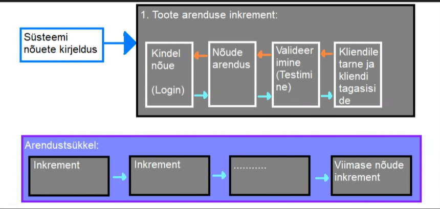

Inkrementaalne arendusmudel
Inkrementaalne arendusmudel on üks viis, kuidas lahendada kosemudeli jäika tsüklit. See aitab arendusmeeskonnal toime tulla muudatustega paremini. Muudatused võivad tulla äritegevusest kliendi söövidest jne. Kuna kosemudelis keset arendustööd on muudatustega toimetulek keeruline on kosemudeli kasutamisel muudatuste sisseviimine väga kulukas. Siinkohal tuleb appi inkrementaalne arendusmudel. Mudel on ajagraafikupõhine ja ei tugine eelnevalt paika pandud kavandile. Inkrementaalses arendusmudelis aitab samaaegset arendustööd teha kindlad tegevused, mida kosemudelis pole. Nende tegevuste abil on võimalik kliendile kuvada programmile keskse tähtsusega osi, enne kui neid täielikult arendama hakatakse. Tehakse näiteks kas mingisugune kasutajaliidese prototüüp või programmeeritakse vähese testimise läbinud MVP, mis omab ainult programminõuetes kirjeldatud keskset funktsiooni.
Kuidas inkrementaalses arenduses tegevus käib?
Nõuete kirjeldus
Kirjeldatakse ära, mida valminud programm tegema peab. Nõuded jaotatakse ära tähtsamateks ja vähemtähtsateks. Tähtsamad nõuded on tavaliselt need, mis kliendile rohkem väärtust loovad. Siin määratakse ära ka, kuidas arendus toimuma hakkab ehk millistest inkrementidest klient oma toodet saama hakkab ehk kui pika aja tagant Iga inkrement peab tarnima kliendile mingi toimiva toote osa.
Süsteemi arendus
Kui nõuded on olemas ning ära jaotatud prioriteedi järgi hakatakse toodet tarnima peale nüüd teostavat arendusprotsessi. Iga inkrementi saab arendada kasutades erinevaid arendusmudeleid. Nt kui programmiosa, mis palju muutmist ei vaja, saab arendada jäiga, nt kosemudeliga või agiilse mudeliga. See milline arendusmudel kõige paremini sobib, saab otsustada arendusmeeskond vastavalt sellele, milline osa sel hetkel arendusel on.
Arendusega samaaegne nõuete täiendus
Kui arendatava programmiosa nõuded on külmutatud, siis muude mitte arenduses olevate osade nõudeid saab veel muuta. Kui üks programmiosa on nõuete väljaselgitamise lõpetanud, saab seda arendama asuda, enne kui nõuded täielikult valmis on.
Tarne ja integratsioon
Nõuetele vastava programmiosa valmimisel tarnitakse kliendile, Klient saab selle kohe kasutusele võtta või omapoolt läbi testida ja täpsustada edasisi projektinõudeid ja anda tagasisidet valminud programmiosa kohta. Selle põhjal võidakse tuletada juba valminud programmiosale uusi nõudeid. Klient saab siis ka valminud osa koheselt integreerida muudolemasoleva keskkonna või eelnevalt arendatud toote süsteemiga.
Inkrementaalse arenduse head ning halvad küljed
| Head küljed | Halvad küljed |
|---|---|
| Kulutused on väiksemad - kuna kasutaja nõuded muutuvad, aga muudatusi saab sisse viia arendustsükli käigus, on nende muudatuste kulud väiksemad, kuna arendustsükkel ise ei ole vaja lõpuni viia, enne muudatuste sisse viimist. | Progressi jälgimine on keerukas. Arendustöö progressi ei jälgita enam arendatud nõuete järgi, kuna need ei ole arendustöö alguses valmis, vaid progressi jälgitakse arenduskiiruse põhiselt. See tekitab halduritele pideva dokumentatsioonivajaduse arenduse hetkeseisu kohta. Kui arendus on kiire, siis on dokumentatsiooni hankimine keerukas, kuna iga väiksema muudatuse kohta pole mõtet dokumentatsiooni tekitadagi |
| Kliendi tagasiside on kohene - olemasolevale arendustööle saab meeskond keset arendust tagasiside, et vajadusel muuta oma nõudeid ja seega ka muuta arendussuunda. Klient näeb kui palju on tehtud. | Süsteemi struktuur aja jooksul degradeerub. Kuna arendatakse juurde pidevalt uusi osi ja ka selliseid osi, mida algselt planeeritud ei olnud, siis kipub arendatava toote sisemine süsteem spagetistuma. Selle vältimiseks kasutatakse koodi refaktoreerimisele, et sisemine struktuur korras hoida. kui korrashoidu ei tehta, siis on hilisem uute osade integratsioon keerulisem. |
| Tarne on kiire. Klient saab juba funktsioneerivad osad kohe pärast arenduse lõppu kasutusele võtta ning klient saab sellest varem kasu kui nt tarkvaratootega, mida arendatakse jäiga arendusmudeliga. |
Arendusmudeli joonis
Mis vahe on inkrementaalsel SDLCl ja iteratiivsel SDLCl?
Kuna inkrementaalne arendus ja iteratiivne arendus on sarnased sõnad, kipuvad nad inimestel sassi minema, aga nad tähendavad erinevaid asju.
Inkrementaalne arendus
on tarkvaratoote arendus kus iga inkremendi raames valmib toimiv tatarkvara osa. Valmissaanud osa integreeritakse olemasoleva süsteemiga.Iteratiivne arendus
on muutumisstrateegia, kus parandatakse või tehakse ringi juba olemasolev süsteem ehk täiustatakse. süsteem saab uue iteratsiooni.